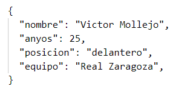

JSON (JavaScript Object Notation) es un formato de intercambio de datos que se basa en la sintaxis de JavaScript, pero es un subconjunto de esa sintaxis.
JSON se utiliza comúnmente para transferir datos estructurados entre un servidor y un cliente web, ya que es fácil de leer y escribir para los humanos y fácil de parsear y generar para las máquinas.
La sintaxis JSON se deriva de la sintaxis de notación de objetos de JavaScript:
- Los datos están en pares de nombre/valor y separados por dos puntos (:).
- Los datos están separados por comas.
- Usa llaves para objetos
- Usa corchetes para matrices
Ejemplo objeto
Ejemplo matriz
Particularmente soy muy aficionado a la meteorología y consulto mucho el OPEN_DATA de Aemet, volcandome la información climatológica de Zaragoza en formato JSON que convierto a Excel para poder manejar los datos
Desarrollando esta página me ha dado por consultar los datos de octubre del 2023 y me ha volcado estos datos (en la imagen solo muestro un par de dias):
Se ve claramente la estructura de JSON, comienzo de la matriz con corchete, de objetos entre llaves, pares/valor separados por dos puntos ...